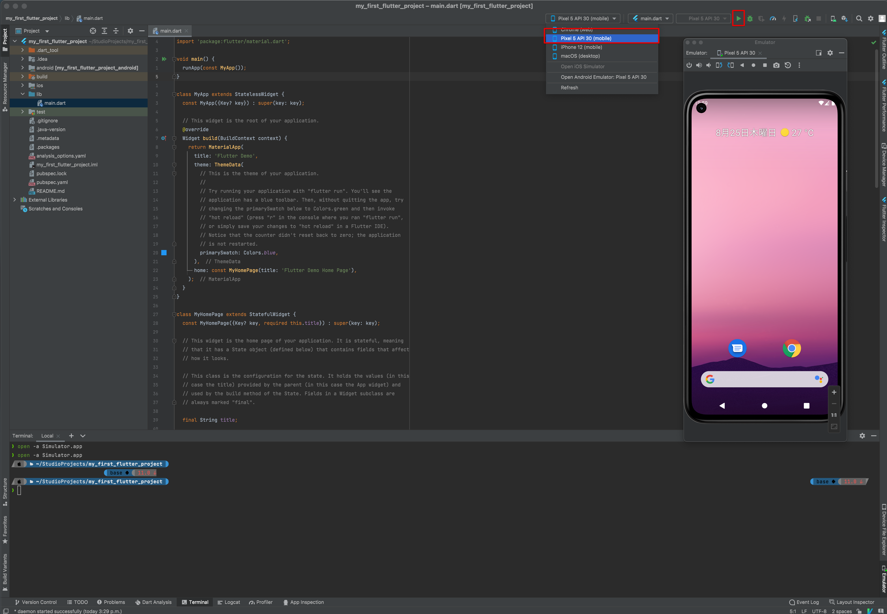
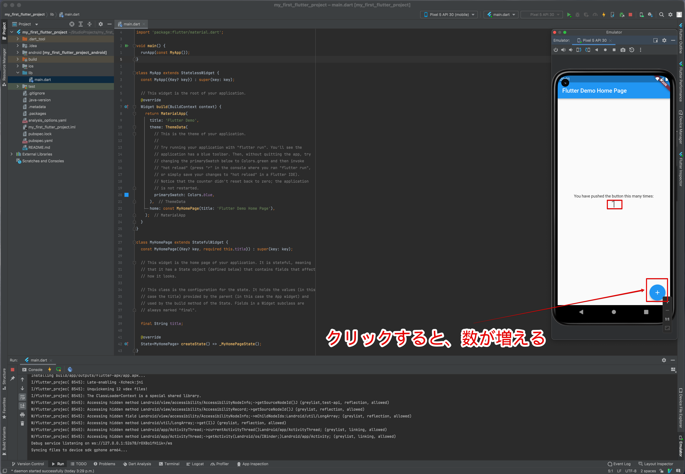
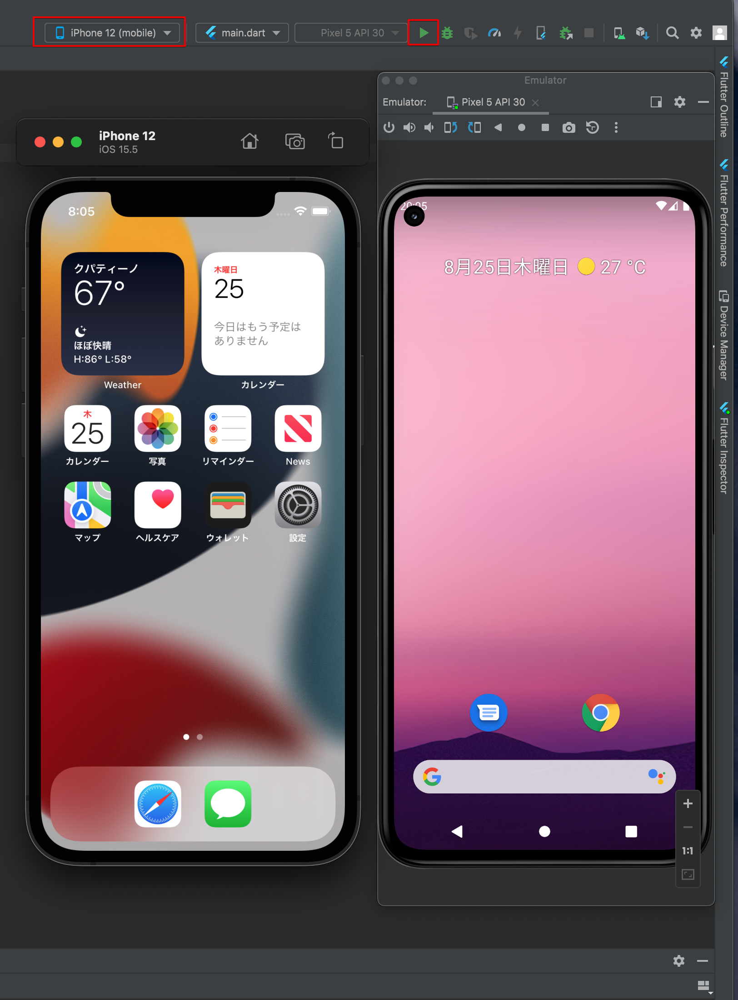
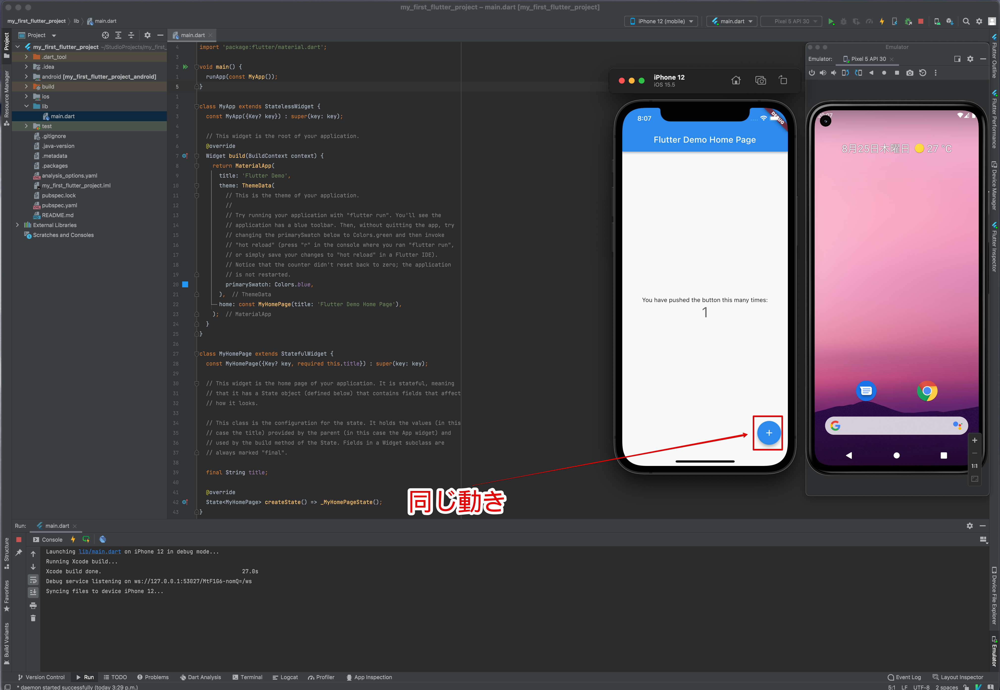

第14章
エミュレータでデバッグ
それでは、エミュレータを使ってスタートアッププロジェクトを動かしてみましょう。
実機やエミュレータを使い、動作確認し不具合を見つけて修正することをデバッグと言います。ボタンクリックひとつで簡単に開始できます。
14.1 Androidエミュレータ
デバイスマネージャーからエミュレータを起動します。
Android Studioの右上にあるエミュレータから対象を選択し、右向き三角のアイコンをクリックします。

図14.1: Androidエミュレータでデバッグ開始
プログラムの解析が行われ、エラーがない場合にはプログラムがスタートします。エミュレータに表示された「+」ボタンをクリックすると表示されている数字が増えていきます。

図14.2: Androidエミュレータでデバッグ中
デバッグの終了は、先ほどデバッグ開始時にクリックした右向き三角付近の「赤い四角」アイコンをクリックします。
14.2 iPhoneエミュレータ
Android Studioで、デバッグ対象にiPhoneを選択します。

図14.3: iPhoneエミュレータでデバッグ開始
iPhoneでプログラムが開始され表示されます。同じように「+」ボタンをクリックすると表示している数が増えます。

図14.4: iPhoneエミュレータでデバッグ中